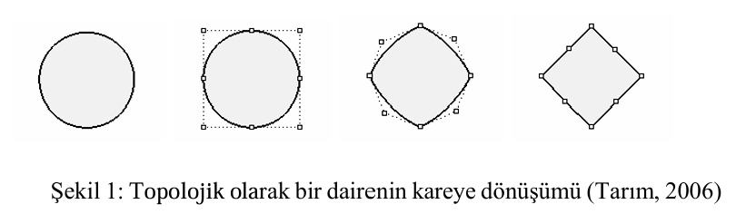
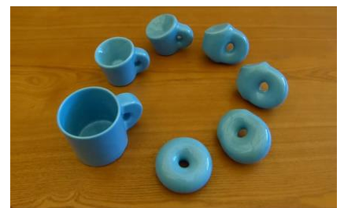
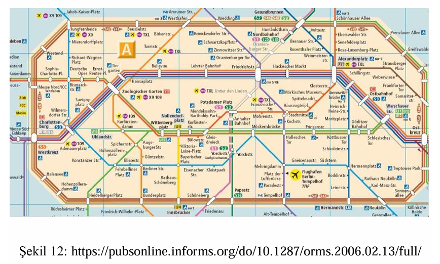
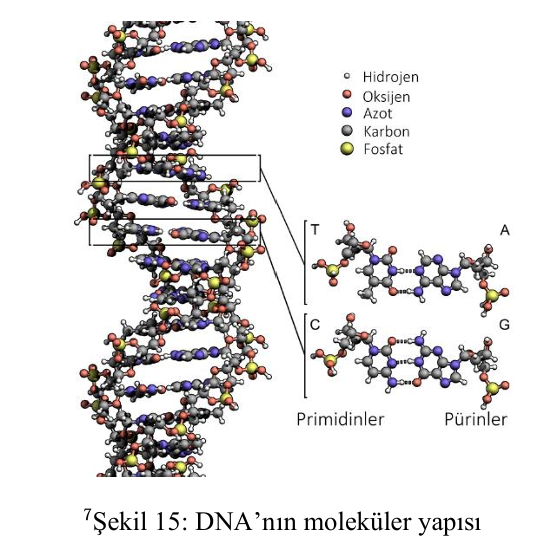
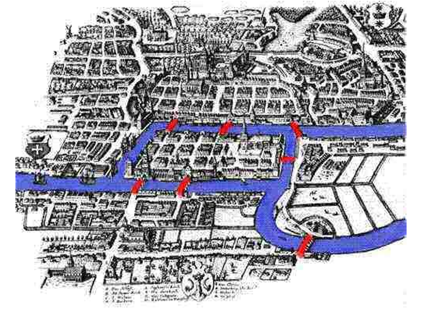

Şekillerin esnek özelliklerini inceleyen büyüleyici matematik dalını keşfedin
Topoloji sözcüğü Yunancada yer, yüzey veya uzay anlamına gelen topos ve bilim anlamına gelen logos sözcüklerinden türetilmiştir. Bu kelime ilk olarak 1847'de Johann Listing tarafından kullanılmıştır.
Topoloji, matematiğin diğer çalışma alanlarına göre nispeten yeni bir dalıdır. 2000 yıl süre Euclid geometrisi hakim olsa da 18. ve 19. yüzyılların başlarında, bazı matematikçiler, şekillerin küresel özelliklerini göz önünde bulundurarak geometrik nesnelere farklı bakmaya başladılar. 1900'lerin başlarında ise soyut cebirsel yapıları işin içine dahil etmek için "şekil" kavramından uzaklaşan topoloji kavramı ortaya çıktı.
Topoloji, kesmeden, delmeden veya birbirine yapışmadan sürekli gerdirme veya
bükme yoluyla şekillerin birbirine dönüşümleri ile ilgilenir. Hatta bu yüzden
topolojiye bazen "lastik levha geometrisi" de denir.

Topoloji her ne kadar matematiğin ana dallarından biri olsa da günlük hayatta birçok alanda kullanılmaktadır. Örneğin, topoloji matematiksel modelleme ve veri analizi için kullanılır. Ayrıca, topoloji mühendislikte ve bilgisayar bilimlerinde de örneğin, bir nesnenin şeklini veya yüzeyini analiz etmek için kullanılabilir. Topoloji ayrıca uzay araştırmalarında, uzayda nesnelerin şekillerini ve yüzeylerini analiz etmek için kullanılabilir.
Topoloji, herhangi bir sürekli deformasyon altında değişmez olan uzayların özelliklerini
inceler. Bazen "lastik levha geometrisi" olarak da adlandırılmasının nedeni nesnelerin
lastik gibi gerilebilir ve büzülebilir, ancak kırılamaz olmasıdır. Örneğin, bir kare
kırılmadan daire şeklinde deforme olabilir, ancak 8 rakamı olamaz. Dolayısıyla bir kare,
topolojik olarak bir daireye eşdeğerdir, ancak bir şekil 8'den farklıdır.

Topoloji, nesnelerin deformasyonları, bükülmeleri ve gerilmeleri yoluyla korunan özelliklerin matematiksel çalışmasıdır ve yırtılmaya izin verilmez.
Deformasyonlar sonucu korunan özelliklere topolojik özellikler denir. Bir daire topolojik olarak bir elipse eşdeğer iken bir küre bir elipsoide eşdeğerdir.
Topolojik dönüşümler ile bir şeklin noktalarına başka bir şeklin noktaları tekabül ettirilir; fakat metrik özelliklerin değil, metrik olmayan özelliklerin korunması önemlidir.
Böylece şekiller değişmeye uğrarlar, fakat topolojik özellikleri korunur. Örneğin, bir karenin bir çember üzerine resmedilmesi veya tersine bir çemberin bir kare üzerine resmedilmesi birer topolojik dönüşümdür. Burada dönüşüm birebirdir ve uzunlukları korumaz. Şekil deforme olmakla birlikte şekiller üzerindeki noktalara ait sıralama ve basit kapalı bir eğri olma özelliği korunmaktadır.
Önemli Not: Bütün topolojik dönüşümlerde basit kapalı şekiller yine kapalı şekil olarak kalırlar. Topoloji, nesnelerin ayrıntılı formlarını göz ardı ederken, nesnelerin doğal bağlantılarını soyutlamak için kullanılabilir.
Topoloji günlük hayatta birçok alanda kullanılmaktadır. Örneğin, topoloji matematiksel modelleme ve veri analizi için, mühendislikte ve bilgisayar bilimlerinde, uzay araştırmalarında bir nesnenin şeklini veya yüzeyini analiz etmek için, coğrafi bilgi sisteminde, haritalamada, ağ sistemlerinde, fizik alanında, moleküler biyoloji ve genetik alanında uygulama alanlarına sahiptir.
Günlük yaşamımızda genellikle topolojinin işe yaramayacağını düşünürüz, oysaki bizi şifreleyen DNA'mızda, bizim kim olduğumuzu ele veren parmak izimizde, avuç içimizde kısacası insan vücudunda bile topolojinin izleri vardır.
Topolojinin sağladığı kolaylıklardan biri, karmaşık haritaların basitleştirilmesidir. Örneğin, metrolarda durakları gösteren haritalar tamamen topolojik bir yaklaşımla çizilmiştir. Çünkü söz konusu olan sadece durakların sıralanışıdır ve şemanın bu haliyle yolculara verdiği bilgi hangi duraktan sonra hangisinin geldiğidir.
Metro haritalarında topoloji mantığıyla hazırlanmış gösterimde, duraklar arası mesafe,
birbirlerine göre doğrultuları, yönleri yani metrik bilgilerin tamamı ihmal edilmiş ve
metronun yol haritası topolojik bir dönüşüm geçirerek çok daha anlaşılır hale getirilmiştir.

Önemli: Topoloji metrik özellikler olan uzaklık ve büyüklük ile ilgilenmez. Ancak topolojide komşuluklar ve sınırlar önemlidir.
Moleküler biyoloji ve genetik alanında, belirli enzimler tarafından DNA çevresinde oluşturulan düğümlerin çözülmesine yardımcı olmak gibi çeşitli uygulamaları vardır. Doğa ile bilimin yasalarının birebir örtüştüğünün çarpıcı bir kanıtı da DNA'nın yapısının geometri ve topoloji ile olan ilişkisidir.
DNA moleküllerinin bağlanma, kıvrılma, bükülme sayıları ile yüzey bağlanma ve döngü
sayılarının sürekli deformasyonlar altında diferansiyel topolojik değişmezlerdir.

Çift sarmallı DNA molekülünde bulunan şeritleri birbirine bağlayan sayı - birinci topolojik özellik.
Farklı DNA halkalarının birbiri içine geçtiği yapılar - ikinci topolojik özellik.
Farklı DNA halkalarının oluşturduğu düğümler - üçüncü topolojik özellik.
Fizik alanında topoloji, fiziksel sistemlerin özelliklerini incelemek için kullanılır. Kuantum alan teorisinde, yoğun madde fiziğinde ve sicim teorisinde kullanılırlar. Sicim teorisini tanımlamak veya gözlemlenen verilere uyan evrenin şeklinin modellerini oluşturmak için fizikte ayrı bir öneme sahiptir.
Topoloji Veri Analizinde veri kümelerinin şeklini ve yapısını incelemek için kullanılır. Topolojik veri analizi, karmaşık veri kümelerini analiz etmek için topolojik yöntemleri uygulayan bir alandır.
Topoloji, bilgisayar ağ sistemlerinin tasarlanmasında da kritik önem taşır. İş istasyonlarının, anahtarların ve sunucuların düzeni, ağın fiziksel topolojisini oluşturur. Bu veri iletme kapasitesini ve hızını büyük ölçüde etkiler.
CBS yazılımlarının tabanında topolojik yaklaşım yatmaktadır. CBS yazılımı, coğrafi veriyi gerektiği gibi analiz edebilmek için topolojik ilişkileri içermeye mecburdur. CBS yazılımını herhangi bir bilgisayar destekli harita yazılımından ayıran en temel özellik de budur.
Her ne kadar matematiğin bir dalı olarak topoloji, varlıkların metrik özelliklerinden çok birbirleriyle olan ilişkileri ile ilgilense de CBS'de topoloji; coğrafi varlıkların birbirleriyle nasıl ve ne şekilde ilişkilendirildiğini geometriden bağımsız şekilde gösterme biçimi olarak tanımlanır.
Özellikle 19. yüzyılın sonlarına doğru Henri Poincaré'nin çalışmalarıyla sağlam temellere oturan, 1950'lerde altın çağını yaşayan ve 20. yüzyılda Felix Hausdorff tarafından geliştirilen topoloji, matematikte, geometrik şekillerin bükme, germe, uzatma veya sıkıştırma sonrasında değişmeyen özelliklerini inceleyen bir disiplindir.
Klasik geometriye katı cisimler olarak bakmak yerine, matematikçiler geometriyi şekilleri lastik gibi elastik bir malzeme olarak düşünerek incelemişlerdir. Topoloji kelimesi Yunanca'da "yer," "yüzey" veya "uzay" anlamına gelen "topos" ve "bilim" anlamına gelen "logos" kelimelerinden türetilmiştir.
Topoloji biliminin kurulduğu dönemlerde, 19. yüzyılın ortalarında, bu terimin yerine Latince "analysis situs" (konumun analizi) terimi kullanılmıştır.
Son yıllarda büyük gelişmeler kaydeden ve diğer ülkelerdeki matematiksel ilerlemelerle paralel olarak Türkiye'de de pek çok araştırmacının ilgi gösterdiği topoloji, basitçe, topolojik değişmezleri, iki yönlü sürekli fonksiyonlar altında değişmeyen özellikler olarak inceleyen geniş bir matematik dalıdır.
Topolojinin uygulama alanı analizden geometriye kadar oldukça geniştir. Herhangi bir eğri, yüzey, eğriler ailesi veya fonksiyon kümesi bir topolojik uzay olarak düşünülebilir.
Topoloji, matematiğin sadece ölçüm ve sayılarla ilgili bir alan olmadığını göstererek bu algıyı da değiştirmiştir. Topoloji, uzunluk, alan gibi ölçülebilir değerlerle değil, nesnelerin örtüşme, bağlantı ve uzamsal ilişkileriyle ilgilenir.
İlk olarak Euler'in 1736'deki çalışmasıyla başlangıcını görebiliriz. Euler, Königsberg köprüleri problemi üzerine yayınladığı makalede mesafe ve ölçümle ilgilenmek yerine farklı bir geometri türünü ele almıştır.
Bu makale sadece yedi köprüyü tek bir yolculukta geçmenin imkansız olduğunu göstermekle
kalmamış, aynı zamanda problemin modern notasyonla nasıl genelleştirilebileceğini göstermiştir.

Topoloji, çağdaş matematiğin hemen hemen her dalında temel bir rol oynar. Topoloji, nokta-küme topolojisi, cebirsel topoloji, ve diferansiyel topoloji gibi birbirinden oldukça farklı dallardan oluşur, ancak bu farklı disiplinler arasında genellikle sınırlı ortaklık bulunur.
Genellikle yerel özelliklere odaklanan bir dal olup analizle yakından ilişkilidir. Topolojik uzayları tanımlamak için süreklilik kavramını genelleştirir. Bazen bu uzaylarda mesafeler tanımlanabilir ve bunlara metrik uzaylar denir.
Uzayların temel özelliklerini inceleyen bir dal olup, köşeler, kenarlar ve yüzler ağından oluşan uzayları ele alır. Topolojinin en eski dallarından biridir ve Euler'e kadar uzanır. Euler karakteristiğini kullanır: V - E + F = 2
Uzayların genel özelliklerini inceleyen ve cebirsel nesneleri (gruplar ve halkalar) kullanarak topolojik sorunları ele alan bir dal. Topolojik problemleri çözmeyi daha kolay hale getiren bir cebirsel probleme dönüştürme yöntemlerini kullanır.
Topolojinin daha özelleşmiş bir alt dalıdır. Topolojik uzaylarda sürekliliği ve düzgünlüğü inceler. Topolojik uzayların her noktasında bir tür pürüzsüzlük yapısının nasıl tanımlanabileceğini araştırır. Vektör alanları gibi manyetik veya elektrik alanların özelliklerini incelemek için kullanışlıdır.
Kombinatoriyel Topoloji, topolojik olarak eşdeğer uzayların aynı sayısal değişmezliğe sahip olduğunu gösterir, bu özellik şimdi Euler karakteristiği olarak adlandırılır. Euler karakteristiği, V, E ve F ile temsil edilen bir nesnenin köşe, kenar ve yüz sayısından türetilir.
Euler Karakteristiği Formülü:
χ = V - E + F = 2
(Herhangi bir dışbükey çokyüzlü için)
Birbirlerine, kesmeden, yapıştırmadan, koparmadan deforme edilebilen şekiller topolojik olarak eşdeğer kabul edilir. Ünlü bir örnek donut ve kahve fincanıdır - her ikisi de bir deliğe sahip olduğu için topolojik olarak eşdeğerdir.
Topolojik Şaka:
"Bir topolojist kahve fincanı ile donutu ayırt edemez!" Bu şaka, topolojide şekillerin
detaylarından çok temel özelliklerinin önemli olduğunu vurgular.
Topoloji, matematiğin birçok dalında kullanılır. Türevlenebilir denklemler, dinamik sistemler, düğüm teorisi ve Riemann yüzeyleri gibi konularda geniş bir uygulama yelpazesine sahiptir. Aynı zamanda fizikte, sicim teorisi ve evrenin uzay-zaman yapısını açıklamak için kullanılır.
Topoloji, matematiğin önemli bir dalıdır ve birçok ünlü problem ve teoremi içerir. İşte topolojinin meşhur problemlerinden bazıları:
Bir şehirdeki yedi köprüyü bir kez geçerek dolaşmanın mümkün olup olmadığını bulmak. Euler tarafından çözülen bu problem, graf teorisinin başlangıcı olarak kabul edilir.
Bu problem, bir haritanın bölgelerini dört renkle boyayarak her iki komşu bölgenin aynı renge sahip olmamasını sağlama sorununu ele alır. Bu problem, tarih boyunca önemli bir matematiksel sorun olarak kabul edilmiştir.
Üç boyutlu uzayda, her noktası bir küreye eşit uzaklıkta olan bir yüzeyin, bir küreye dönüştürülebilir olup olmadığını belirlemek. 2003 yılında Grigori Perelman tarafından çözüldü.
Bir ipin uçlarını birleştirerek oluşturulan düğümlerin sınıflandırılması ve özelliklerinin incelenmesi. DNA araştırmalarından polimer fiziğine kadar geniş uygulama alanına sahiptir.
Bu teorem, bir kompakt manifoldun (yüzeyin) Laplace operatörünün özdeğerlerinin ve özfonksiyonlarının özel bir şekilde sıralandığını açıklar.
Bu teorem, kapalı bir eğriyi iki bileşenli bir şekilde bölebilecek bir doğru veya eğrinin her zaman bulunabileceğini söyler.
Poincaré kalıp bulma problemini çözmeye çalışan teoremler, uzayın topolojik özellikleri ile ilgili karmaşık sorunları ele alır.
Bu, sadece topolojinin ünlü problemlerinden bazılarıdır. Topoloji, oldukça derin ve karmaşık bir matematik dalıdır ve birçok farklı problem ve teorem içerir. Bu problemler ve teoremler, matematikçilerin ve araştırmacıların ilgisini çekmeye devam etmektedir.
Daha Fazla Bilgi İçin:
Bu problemlerin yanı sıra, topoloji ile ilgili birçok problem ve çözümü için
"Çözümleriyle Topoloji Problemleri" (İsmet Karaca) adlı kitap incelenebilir.
Topolojinin uygulama alanları çok çeşitlidir. Topoloji, matematiğin ana dallarından biridir ve uzay, yüzey, şekil gibi kavramları inceler. Topoloji, geometri, analiz, cebir, diferansiyel denklemler, dinamik sistemler, kriptoloji, robotik, bilgisayar bilimi gibi birçok matematiksel ve mühendislik alanında kullanılır.
Topoloji, nesnelerin değişmez özelliklerini (örneğin delik sayısı, bağlantı, yönelim) araştırır ve esnek dönüşümlere (örneğin germe, büzme, bükme) dayanıklıdır. Topoloji sayesinde karmaşık problemleri basitleştirmek ve yeni kavramlar keşfetmek mümkündür.
Nokta-küme topolojisi olarak da adlandırılan genel topoloji, cebirsel, diferansiyel, geometrik dahil olmak üzere diğer tüm topoloji dallarının temelini oluşturmaktadır. Bu anlamda topolojik uzay kavramı zaman içerisinde birçok matematikçi tarafından çalışılarak genişletilmiştir.
80'lerde Mashhour ve ark. tarafından tanımlanmıştır. Sonlu kesişimler altında kapalı olma özelliğini bulundurmayan uzayları inceler.
Adel M. Al odhari tarafından verilmiştir. Keyfi birleşim altında kapalılık özelliğini sağlamayan yapıları inceler.
Son yirmi yılda klasik küme yerine bulanık küme alınarak geliştirilen topolojik uzay çeşididir.
Klasik topolojinin yerini esnek küme yapıları kullanarak alan modern topoloji dalıdır.
Bu yeni yapılar çok sayıda araştırmacı tarafından desteklenmiştir. Takip eden yıllarda topolojik uzaylar üzerinde kapsamlı araştırmalar yapıldı ve genelleştirmeler verildi. Topolojik uzaylar farklı bir alana taşınarak çalışmalar çok yönlü hale gelmiş ve gelişmiştir.
Güncel Gelişmeler:
Ayrıca bulanık topolojinin supra bulanık topolojiye genelleştirildiği ve buna benzer
birçok güncel çalışma da mevcuttur. Bu özel topolojik uzaylar, modern matematiğin
gelişen alanlarındandır.
Matematik ve Topolojiyi Oyunlarla Keşfedin! Bu oyunlar, topolojinin temel kavramlarını eğlenceli ve interaktif bir şekilde öğrenmenize yardımcı olur.
Conway'in klasik graf oyunu. Noktaları birleştir, yeni noktalar ekle ve rakibini köşeye sıkıştır!
Eğrilerin topolojik özelliklerini öğren! Basit, kapalı ve bağlantılı eğrileri tanı.
Königsberg köprüleri problemi! Bir grapta her kenardan geçerek tur atabilir misin?
Harflerin normal ve açılmış hallerini eşleştir! Homeomorfizma kavramını keşfet.
John Nash'in ünlü strateji oyunu! Karşı kenarları birleştir ve kazanan ol.